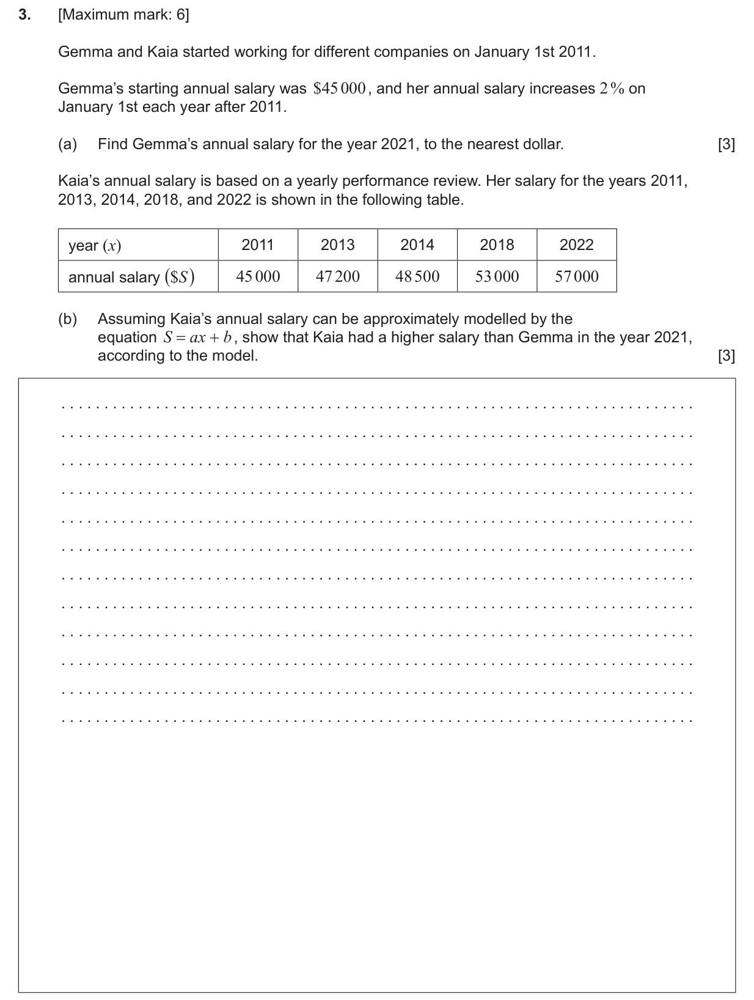
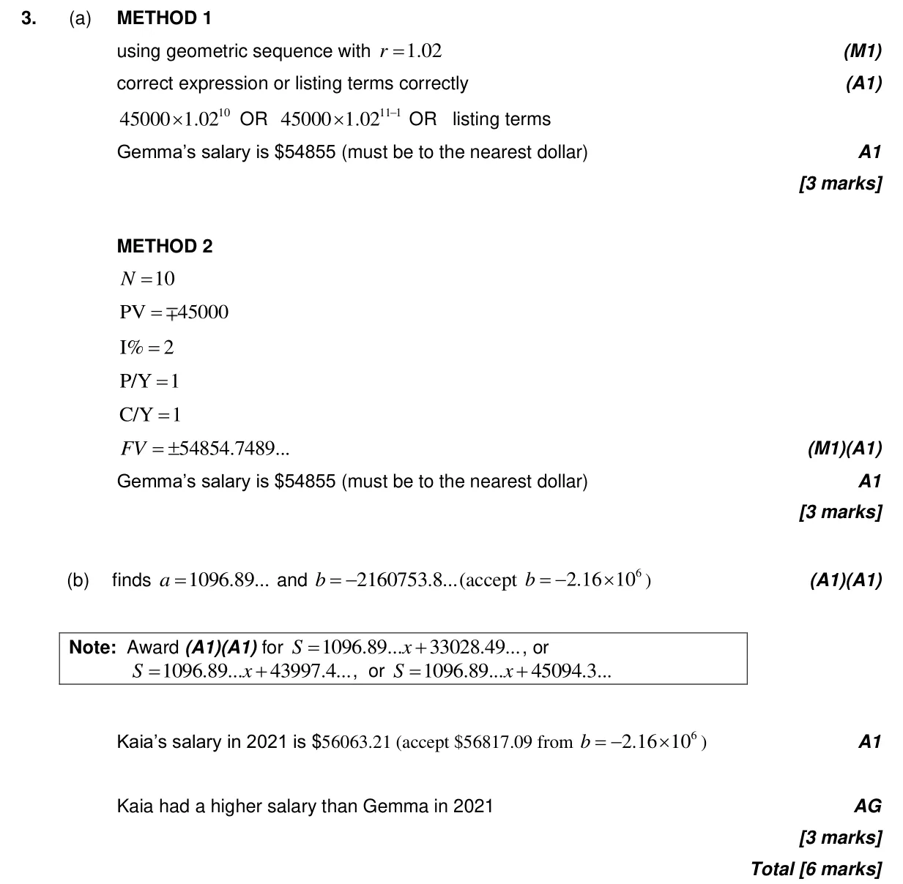

1.4 Financial applications of geometric sequences and series4.4 Pearson's, scatter diagrams and equation of y on x
Question

Markscheme

6 marks - May P2 TZ2 - Section A - Mathematics: Analysis and Approaches SL

